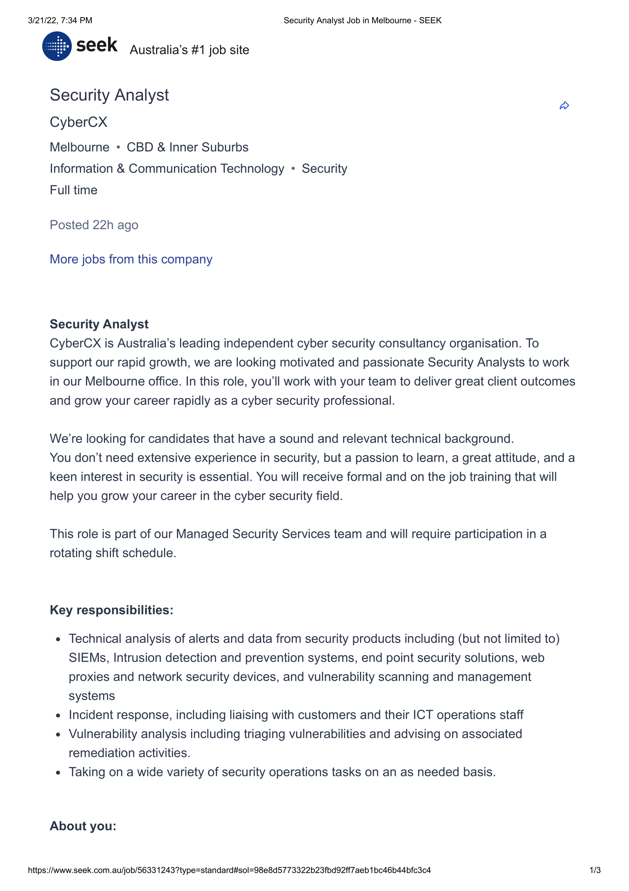
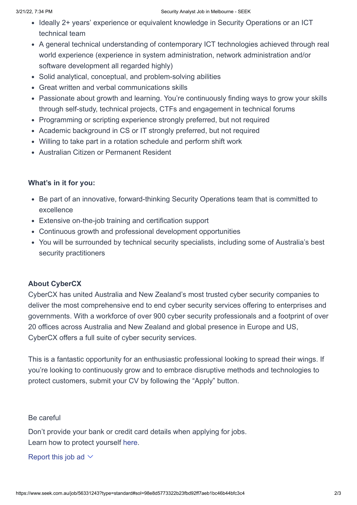

Daniel Nguyen
ID: S3953534
Github Repo: https://github.com/Nanakiri/Demo
Pages: https://nanakiri.github.io/Demo
Hey! I'm Daniel Nguyen (s3953534), and I'm a current 1st year student at RMIT. Nice to meet you! I have completed my education up to Year 12, and decided to enrol into a university course right after, so here I am!
I am Australian-Vietnamese, however I prefer speaking English in general.
I have a general interest to the art, music and crafts people make, but most of all I am a fan of gaming, spending most of my days levelling up and progressing in various games, or experiencing the worlds and stories developers and makers have created.
IT is progressively becoming more involved with the things around us, creating more fields of technology to explore. I think my enjoyment with IT would come from the creativity and versatility that IT is capable of. Being able to basically do anything with IT as long as you know the workings and options of a game engine or code seems cool to me.
It's hard to pinpoint the very start of my interest in IT. IT has been all around my life since the start; watching family members play games and watch music videos, learning how to call and take pictures on a phone, they have all garnered my interest to IT in their own way. It may have been a result of watching movies and media showing people losing their jobs to machines, nudging me to consider future jobs in IT, but hey, who knows? As of starting the course, I have finished a "Partial Completion in Certificate III Information, Digital Media and Technology" VCE VET course during College!
When deciding what university to enrol in to further my studies, RMIT seemed like a good choice, (I mean, it's in the name, so of course!), as I was most familiar with the institute and its services. I would often see the building when I would ever get the chance to go to the city, and my school also happened to be a part of the SNAP program, so I got to be introduced to RMIT and how the general schedule went every now and then. Fortunately, my house was also close to the city, being only a half hour ride on the train, so campus sessions thankfully weren't an issue!
As i'm studying the "Bachelor of Information Technology", I expect to learn about IT in general, such as the various ways IT is around us, and learning how to interact and create with technology. As the course continues, I imagine that while it gets more advanced, I would also be able to learn something more specific, closer to the profession I may want to aim towards.
Though I am not entirely sure what path I really want to focus on, Cyber Security is something that interests me for now. One job listing that I feel matches my ideal job was as a Security Analyst at CyberCX:
 In this position, I would learn about different security issues, how to deal with them, then practise and apply them to situations. It seems like a course that can serve as a base for my career, and would be something that can help prepare me for future jobs. It also reminds me of a similar position in my school, which had on-site IT Staff doing similar things. They may have served as inspiration for this job listing.
The job listing mostly required 2+ years of knowledge in Security operations/being in an ICT technical team, experience in IT systems and network administration, and experience in programming and scripting, with more general requirements such as good written and verbal communication skills, problem solving abilities and willingness to grow and learn. There are also requirements such as being an Australian citizen, and being able to work in a rotation schedule and shift work.
Although it can't really be measured, I would say I am not bad at communicating through writing nor verbal means. Problem solving can sometimes be fun for me, and I am not opposed to learning new things. I have some general experience with IT with my partial completion of the VET course (and living here for my whole life probably confirms I'm a citizen). However, the rest of the requirements may not be easy to achieve. With the current Bachelor course, I would have one semester learning about IT Security, and would learn programming across multiple courses. Before applying to a job like the listing for CyberCX, I may go for a smaller job at a company or school to help gain more experience in network administration and being in a ICT Technical team.
The 16personalities test visualised my personality in a way that I probably couldn't before. I found myself agreeing to the thoughts and statements said in the Logician's description,and thinking about how I have interacted with others. It was surprising, yet comforting knowing that some of my thoughts and perspectives were shared with others. However, while I may agree with what the test says, I would not take everything said as direct, and try not to base my life and personality around "Logician". As much as it helps identify my personality and perspective on things, it's good to think freely and not purely based on what a site or person would say you should see things.
With this personality, when placed in a team setting, I would be open to suggestions, and try to input my ideas into the group, trying to make the most in a project. However I may also lose attention, and struggle to finish or end things in an attempt to perfect everything. Although this may not be 100% accurate, I would take these results, and try to improve my weaknesses, while trying to further enhance these strengths.

When receiving the learning style results, I was surprised to see a mostly balanced score of "30-35-35, suggesting that I am generally balanced with my learning style. When I think about how I currently learn, I sometimes found myself struggling to stay focused or study in general. After looking at these results, I might try varying the way I study, such as drawing diagrams to help visualise concepts, or creating examples and scenarios to apply my knowledge.
When in a team, I think this balanced way of learning would assist me, as I would be able to understand the different ways members would take notes, or help explain ideas in different ways for others that may not understand the information given.
Looking at the Big Five Personality test, the results were a mix of understanding and unexpectedness, as some points were things I already realised, while others weren’t familiar to me. The results stated that while I scored high in creativity and appreciation of arts, along with empathy and putting others’ needs ahead of mine, I was low in self-discipline and control, in addition to being more introverted. With this in mind, I now know what I should try to work on, and could attempt the test again to aim for a balanced or high reaching score.
In a team setting, the results have made me more aware of how I may participate with members. It seems I would do well in the creative side of projects, and may try to help others in their side of the project. But although I am inclined to help my team when necessary, it wouldn’t mean much when I'm not willing to say so, which I do sometimes notice as a part of my reserved nature.
When it comes to making a project, my plan is to make a software or extension that allows the user to access and listen to music from different sites in one location. The user would be able to search a song or video name, with the software/extension listing results from different sources like Youtube, Spotify and Soundcloud. They would be able to view the video with common features in players (pausing, skipping forward and back, volume). There would also be a section for created playlists, where users can create lists of videos and songs for personal use.
When trying to think of a project idea, I put on some music in the background. In the comments of some of the songs, there would be people asking the artist to “put this on Spotify!” or other services, which some of the time can’t be done due to copyright, licensing or any other reasons related to guidelines and such. One software on my phone was an app that downloaded songs I viewed straight to the phone, allowing it to be viewed easily, however the act of downloading songs may be troublesome to others, and can be viewed as a waste of space. So I decided that having a software or extension that deals with the problem of different songs on varying platforms would be beneficial to others.
When the software/extension is opened up, the player would act as a home page, with a screen on the top, with buttons for the player below, such as pause/resume, going forward and backwards a few seconds, going to the previous or next video, volume control, looping and autoplay. A section would be available for relevant videos, or videos in a playlist. There would be a blank screen, as nothing would be playing. Buttons would lead the user to functions like a search bar, playlists, and a history of previous videos seen. They may act like pop-up windows, allowing the user to continue viewing any video that would be currently playing.
Using the search bar, the user can look for a video, listing search results from different platforms. There can be filter options for specific sites, or the types of videos shown (length, date posted, views etc.) to help find relevant videos. The user can click the video, directing them back to the player to watch it. A section would show videos such as ones uploaded by the same person, videos that also appeared in the search results, or recommended videos. Alternatively, clicking a playlist would list all the videos that would automatically play next. If the video chosen was purely audio, the screen would just show the thumbnail, or an audio visualizer.
Right-clicking a video could allow the user to create a playlist, naming it and having a personal list of videos they can come back to. They would be able to shuffle the order when viewing them, or change the order of videos themselves, including options like “most viewed”, “recently uploaded” and others. There may be an option to log-in to the user’s youtube or spotify accounts, allowing them to save previously-made playlists for convenience.
As it is a software, I would need a coding software to create the product. Software such as Python and Visual Basic are things I am familiar with, so learning how to use them would not be as big an issue than other programming languages. In terms of hardware, I may need items like a server to store data for the software.
To create this project, I would need knowledge on how to create a video player, and how to create the functions and buttons for the videos. There is also the method of obtaining the videos across the platforms, viewing them in a relatively similar manner. I would need a way to store and save playlists created by users, and allow them to log in to their accounts for previously made playlists. While I am learning programming, I can also use online tools to help learn how to code some features. Considering that there are multiple mobile players that are able to search for youtube videos, it may be easy to access videos.
Upon completing the project, a user would be able to listen and/or watch videos across different platforms in one area. This would help solve the issue of not being able to listen to your favourite songs that are spread across different platforms, or things like podcasts that aren’t available in the usual platform you view them in. The project acts as a way to solve the problems of “exclusivity” in videos, giving people an option to view videos from any platform when the uploader is unable to do so due to guidelines that vary between platforms.